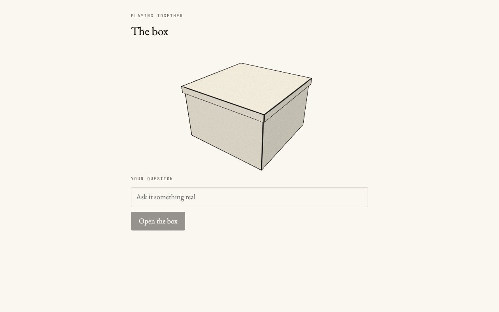

Playing Together
A divinatory box made together with a collaborator from peatandrepeat.org. It answers a question with a reading drawn from its own invented world. It is a shared practice for its makers, a way to create another world to tap into, not a replacement for an existing one.

An invented world
The box speaks only from its own world file. It uses no tarot, I Ching or other symbols from real traditions, and it never predicts. The world resolves as symbols are written in together. Each symbol is a figure drawn in lines and arcs, with a name and a line of lore; the first is the Prehistoric Fern: "It uncurled before there were flowers. What it laid down became the ground." A symbol that both makers have not yet agreed on is drawn as a proposal, dashed and in a different colour, never in the same ink as an accepted one.
The draw and the reading
The draw, its seed and the symbols it selected, is written to an append-only ledger before any interpretation exists, so a reading can never steer its own draw. The same world and seed always give the same draw, so any draw in the ledger can be replayed. A reading is then written by one of the makers, stored separately, and shown labelled as interpretation.
A paper box drawn in ink
The box is a matte paper box with grain and inked edges, in a palette of paper and ink that inverts in dark mode. Its only motion is the lid opening, and the lid opens only once the draw has been recorded: it opens because a draw happened, not to suggest the box knows anything. Nothing glows, pulses or sparkles. The figure comes first, and its name is a gloss beneath it.
the browser, in 3D